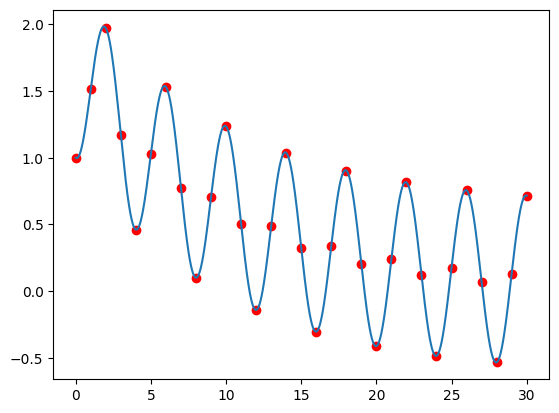
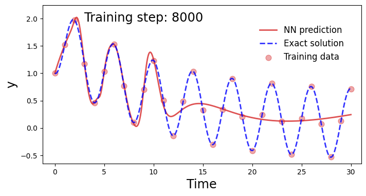
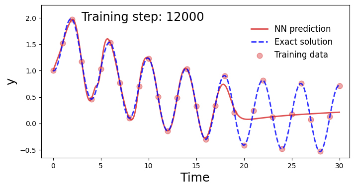
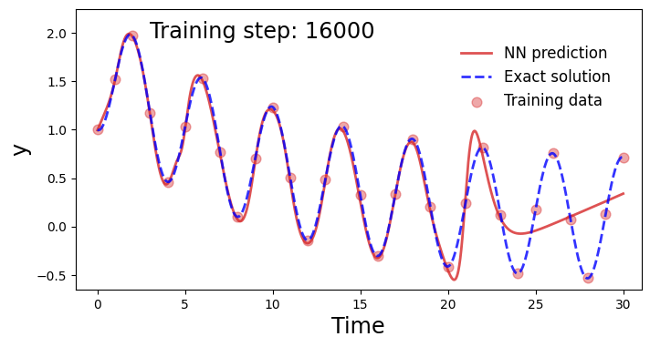
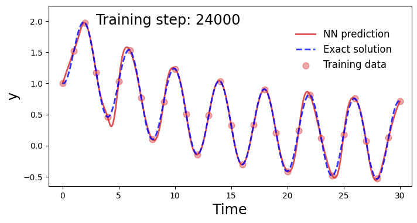

Solving Differential Equation using Neural Networks
First Equation to Solve:
$$ \frac{dy}{dx} + 0.1t - \sin (\pi * t/2) = 0 $$import matplotlib.pyplot as plt
import numpy as np
%matplotlib inline
Exact Solution using numerical integration
def rk4(f, t, y, h):
k1 = h * f(t, y)
k2 = h * f(t + h / 2, y + k1 / 2)
k3 = h * f(t + h / 2, y + k2 / 2)
k4 = h * f(t + h, y + k3)
return y + (k1 + 2 * k2 + 2 * k3 + k4) / 6
def solve_ode(f, t0, y0, t_end, h):
t_values = np.arange(t0, t_end + h, h)
y_values = np.zeros((len(t_values),) + np.shape(y0))
y_values[0] = y0
for i in range(1, len(t_values)):
y_values[i] = rk4(f, t_values[i - 1], y_values[i - 1], h)
return t_values, y_values
def dy_dt(t, y):
return np.sin(np.pi * t / 2 ) - 1/10 * y
t_values, y_values = solve_ode(dy_dt, 0, 1, 30, 0.01)
t_train = t_values[::100]
y_train = y_values[::100]
plt.plot(t_values, y_values)
plt.scatter(t_train, y_train, c='red')
plt.show()

Use a neural network with no “physical” information
import torch
import torch.nn as nn
import torch.optim as optim
class NN(nn.Module):
def __init__(self, n_input=1, n_output=1, hidden_dim=32):
super().__init__()
self.activation = nn.Tanh()
self.fc1 = nn.Linear(n_input, hidden_dim)
self.fc2 = nn.Linear(hidden_dim, hidden_dim)
self.fc3 = nn.Linear(hidden_dim, n_output)
def forward(self, x):
x = self.fc1(x)
x = self.activation(x)
x = self.fc2(x)
x = self.activation(x)
x = self.fc3(x)
return x
def plot_result(x, y, x_data, y_data, yh, xp=None):
"Pretty plot training results"
plt.figure(figsize=(8, 4))
plt.plot(x, yh, color="tab:red", linewidth=2, alpha=0.8, label="NN prediction")
plt.plot(
x,
y,
color="blue",
linewidth=2,
alpha=0.8,
linestyle="--",
label="Exact solution",
)
plt.scatter(x_data, y_data, s=60, color="tab:red", alpha=0.4, label="Training data")
if xp is not None:
plt.scatter(
xp,
-0 * torch.ones_like(xp),
s=30,
color="tab:green",
alpha=0.4,
label="Collocation points",
)
leg = plt.legend(loc=(0.67, 0.62), frameon=False, fontsize="large")
plt.setp(leg.get_texts(), color="k")
plt.xlim(-1.25, 31.05)
plt.ylim(-0.65, 2.25)
plt.text(2.965, 1.95, "Training step: %i" % (i + 1), fontsize="xx-large", color="k")
plt.ylabel("y", fontsize="xx-large")
plt.xlabel("Time", fontsize="xx-large")
plt.axis("on")
t_values = torch.from_numpy(t_values).float()
y_values = torch.from_numpy(y_values).float()
t_train = torch.from_numpy(t_train).float()
y_train = torch.from_numpy(y_train).float()
torch.manual_seed(123)
model = NN()
optimiser = optim.Adam(model.parameters(), lr=3e-3)
files = []
loss11_history = []
for i in range(48000):
yh = model(t_train.unsqueeze(1)).squeeze()
loss = torch.mean((yh - y_train) ** 2)
optimiser.zero_grad()
loss.backward()
optimiser.step()
if (i + 1) % 100 == 0:
loss11_history.append(loss.detach())
if (i + 1) % 4000 == 0:
yh = model(t_values.unsqueeze(1)).detach()
plot_result(t_values, y_values, t_train, y_train, yh)
plt.show()
else:
plt.close("all")
fig11 = plt.figure(11)
plt.plot(loss11_history)
plt.xlabel("Training step ($10^2$)", fontsize="xx-large")
plt.ylabel("Loss", fontsize="xx-large")
plt.yscale("log")
plt.legend()




/var/folders/qc/h4k546bs6j9bl76bcjwyw5cw0000gn/T/ipykernel_20571/329073061.py:32: UserWarning: No artists with labels found to put in legend. Note that artists whose label start with an underscore are ignored when legend() is called with no argument.
plt.legend()
<matplotlib.legend.Legend at 0x155abf880>
Using a physical loss on the neural network
t_physics = torch.linspace(0, 30, 50).unsqueeze(1).requires_grad_(True)
lam = 0.1
torch.manual_seed(123)
model = NN()
optimiser = torch.optim.Adam(model.parameters(), lr=3e-3)
loss_history = []
loss2_history = []
for i in range(48000):
optimiser.zero_grad()
yh = model(t_train.unsqueeze(1)).squeeze()
loss1 = 1.*torch.mean((yh-y_train)**2)
yhp = model(t_physics.unsqueeze(1)).squeeze()
dx = torch.autograd.grad(yhp, t_physics, torch.ones_like(yhp), create_graph=True)[0]
physics = dx + lam * yhp - torch.sin(np.pi * t_physics / 2)
loss2 = (6e-2) * (torch.mean(physics**2))
loss = loss1 + loss2
loss.backward()
optimiser.step()
# We plot the result as training progresses ....................................
if (i+1) % 100 == 0:
loss_history.append(loss.detach())
loss2_history.append(loss2.detach())
yh = model(t_values.unsqueeze(1)).detach().squeeze()
xp = t_physics.detach()
plot_result(t_values, y_values, t_train, y_train, yh, xp)
if (i+1) % 6000 == 0:
plt.show()
else:
plt.close("all")